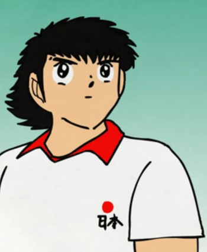

Cristiano Penaldo
Jugador que no le importa a nadie. Bueno sí, a todos los seguidores de periodicos madridistas que además de idolatrarlo han llegado a pedir la nacionalidad portuguesa y han querido que Cristiano le gane a España con la selección.
Cuando dejó a su anterior novia, muchos de estos juntaletras pidieron la nulidad matrimonial con la esperanza de poder conocerlo en persona y hacer que sucumban a sus encantos. El chico no es malo, pero tampoco agradable.
Leer más...
Oliver Atom

Oliver Atom. Palabras mayores. Mas talento que en el Louvre. Todocampista. Es el prota. Solo el mete los goles decisivos. ¿Que le rodean 5 jugadores? Pues se saca la polla y les mea en la cara. Con su novio Tom, crea una dupla magica. Tiene club de fans. Eterno capitan. 10.
Es imposible no sentirse atraído por este personaje, pero el problema está en que es mentira. El mito consiste en que Oliver se despertaba al final del último episodio de 'Campeones hacia el mundial' sin piernas en la cama de un hospital, dando a entender que toda su carrera como futbolista había sido un sueño, ya que un accidente de niño le había dejado en ese estado.
Leer más...